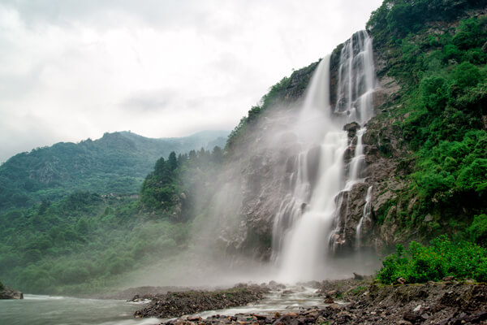
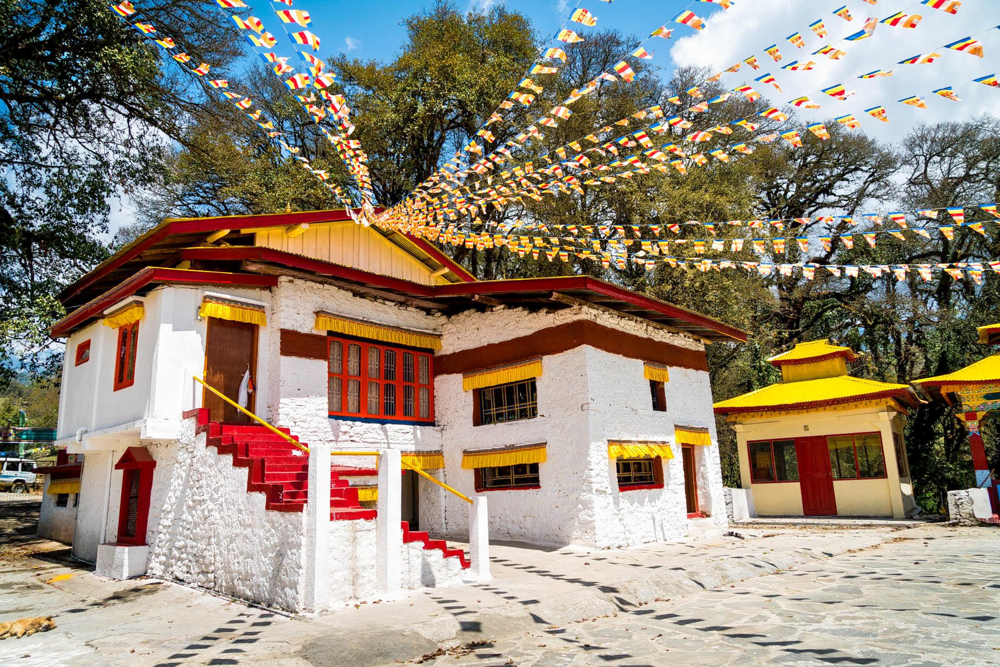
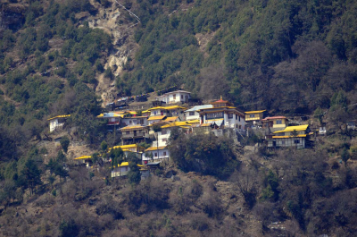
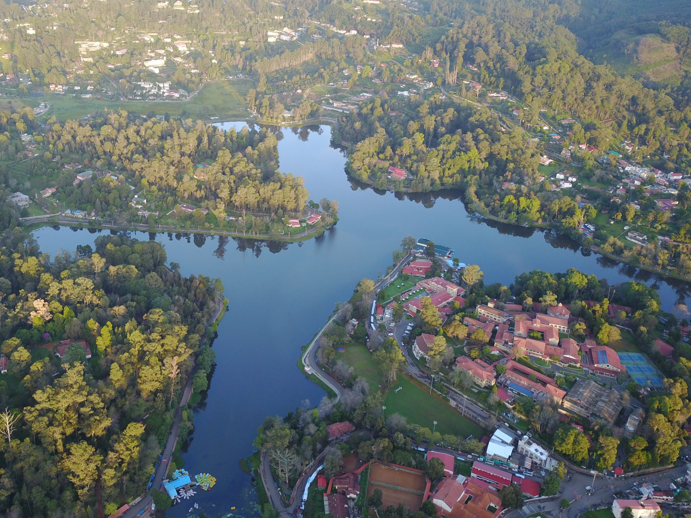
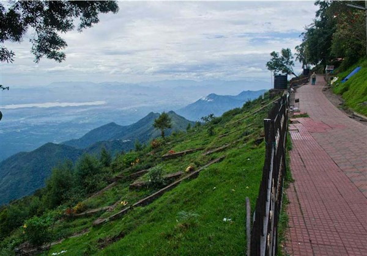
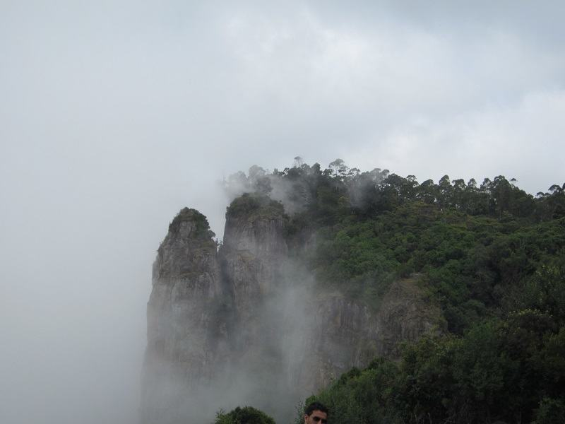
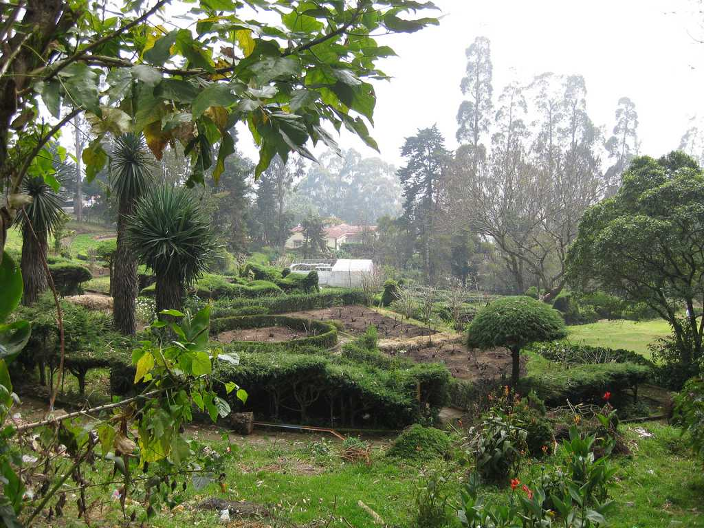
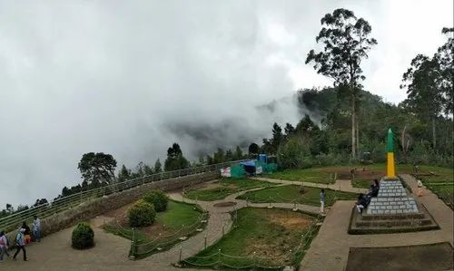
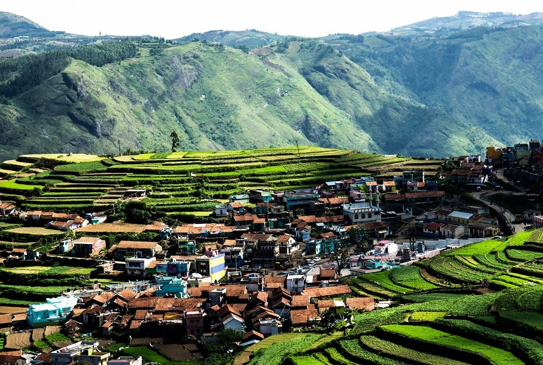

Nuranang Waterfall, also known as Jang or Bong Bong Falls, is a captivating natural attraction in
Tawang, Arunachal
Pradesh, notable for its stunning beauty and historical significance. It's a
100-meter high
waterfall, surrounded by
lush greenery and mist, making it a popular spot for
nature lovers and photographers.
1. Scenic Beauty:
Nuranang Falls is renowned for its mesmerizing beauty, with the cascading water surrounded by
pristine hills, verdant
greenery, and a thick cover of mist.
2. Historical Significance:
The waterfall is linked to the legend of Rifleman Jaswant Singh Rawat, who bravely defended his
post
during the 1962
Sino-Indian war.
3. Accessibility:
Nuranang Falls is conveniently located on the Trans-Arunachal Highway, making it easily
accessible
from Tawang. It is a
popular detour for those traveling to or from Tawang city.
4. Surrounding Attractions:
The falls are in close proximity to other significant sites like the Tawang Monastery, Tawang
War
Memorial, and the Jang
Hydel Plant, offering a blend of natural beauty, spiritual exploration,
and historical context.
5. Tourism Potential:
Nuranang Falls offers various opportunities for visitors, including photography, picnicking, hiking,
and exploring the
nearby attractions. The falls also serve as a starting point for further exploration
of the Tawang
region.
The Tawang War Memorial, located in Arunachal Pradesh, is a significant site commemorating the Indian
soldiers who died
in the 1962 Sino-Indian War, particularly those who fought in the Tawang sector. It features a 40-foot
concrete obelisk,
a museum with war artifacts, and a sound and light show. The memorial also includes a gift shop and
offers a place for
reflection and remembrance.
1. Commemoration:
The memorial was built to honor the Indian soldiers who died defending the nation's territorial
integrity during the
1962 Sino-Indian War, specifically in the Tawang sector.
2. Central Structure:
The memorial's centerpiece is a 40-foot concrete obelisk, adorned with intricate designs and murals,
topped with a
golden dome.
3. Museum and Exhibits:
A museum within the memorial displays photographs, documents, and artifacts related to the war,
providing insight into
the conflict and the soldiers' bravery.
4. Sound and Light Show:
Visitors can experience a sound and light show that recreates the events of the 1962 war, offering a
deeper
understanding of the sacrifices made.
5. Significance:
The Tawang War Memorial is a place of patriotic commemoration and a symbol of the resilience and bravery
of the Indian
soldiers. It also serves as a reminder of the sacrifices made to protect the nation's borders and offers
a space for
reflection.

Urgelling Monastery, located near Tawang in Arunachal Pradesh, is significant Buddhist monastery
known for its
historical and spiritual importance. Established in the 15th century by Urgen Sangpo,
it is the
birthplace of the 6th
Dalai Lama, Tsangyang Gyatso. The monastery, though smaller than
Tawang Monastery, holds a serene
atmosphere and offers
insights into the architectural style
prevalent before the grand Tawang Monastery.
1. Birthplace of the 6th Dalai Lama:
Urgelling is renowned as the birthplace of Tsangyang Gyatso, the 6th Dalai Lama, making it a
significant pilgrimage site
for Buddhists.
2. Historical Importance:
The monastery predates the larger Tawang Monastery and is a testament to the rich Buddhist
heritage
of the region.
3. Architectural Style:
Urgelling Monastery showcases traditional Tibetan Buddhist architecture with a focus on
simplicity
and a focus on
meditation and prayer.
4. Cultural Significance:
The monastery houses various artifacts, scriptures, and thangkas (scroll paintings) that offer a
glimpse into Buddhist
traditions and practices.
5. Spiritual Atmosphere:
Urgelling Monastery is a place of peace and tranquility, providing a serene environment for monks
and visitors to engage
in meditation and prayer.

Gyangong Ani Gompa, a serene Buddhist nunnery near Tawang, is known for its simplicity, peaceful
atmosphere, and
connection to Buddhist traditions. It's a place where nuns lead a simple life, engaging in prayer,
meditation, and
communal activities.
1. Location and History:
Situated on a hillside about 10 kilometers northwest of Tawang Monastery, it was established by Mera
Lama Lodre Gyamtso,
who gifted it to his sister, a nun.
2. Simple Architecture:
The nunnery features basic, hut-shaped structures made of stones, reflecting the simple lifestyle of the
nuns who reside
there.
3. Spiritual Practices:
Nuns at Gyangong Ani Gompa engage in daily prayers, meditation, scripture study, and communal work. They
also
participate in activities like making Tsa-Tsa (small clay stupas), performing prostrations, and creating
thangka
paintings.
4. Connection to Tawang Monastery:
Gyangong Ani Gompa is under the administrative control of the Tawang Monastery.
5. A Place of Solitude and Reflection:
The nunnery offers a tranquil environment for nuns to deepen their spiritual practice through solitary
meditation and
contemplation.

Kodaikanal Lake, a star-shaped, man-made marvel, is a popular tourist destination. It's known for
its scenic beauty,
boating facilities, and surrounding attractions like Bryant Park and Coaker's Walk.
Visitors can
enjoy walking, cycling,
and horse riding around the lake, as well as boat rides.
1. Star-shaped and man-made:
The lake is uniquely shaped like a star and was constructed in 1863 by Sir Vere Henry Levinge.
2. Boating and recreational activities:
Various types of boats are available for rent, including rowboats, pedal boats, and shikaras.
Visitors
can also enjoy
cycling and horse riding around the lake.
3. Surrounded by natural beauty:
The lake is situated amidst lush greenery and is close to other attractions like Bryant Park, known
for its flower
shows, and Coaker's Walk, a scenic promenade.
4. Ideal for walking and photography:
The lake offers a pleasant walking experience, with a granite stone pathway around its perimeter.
It's also a popular
spot for photography, with picturesque views the lake and surrounding landscape.
5. Tourist-friendly amenities:
The lake area is equipped with parking facilities, vendor stalls selling local crafts and snacks,
and
recreational
activities for children.

Coaker's Walk in Kodaikanal is a popular pedestrian path known for its scenic beauty and views.
Important points include
its historical significance as a pathway built in 1872, the breathtaking panoramic views of valleys and
plains, the
telescope house for enhanced viewing, and the pleasant weather that makes it a great place for a walk,
especially in the
mornings and evenings.
1. Historical Significance:
Coaker's Walk was constructed in 1872 by Lt. Coaker, after whom it is named. The one-kilometer long path
was built along
the edge of a steep slope, offering views of the surrounding landscape.
2. Scenic Views:
The walk provides stunning panoramic views of the valleys and plains below, including the Pambar River
valley and
glimpses of Dolphin's Nose, Periyakulam town, and even Madurai city on clear days.
3. Telescope House:
A telescope house is available for visitors to get a closer and clearer view of the surrounding scenery.
This allows for
a more detailed observation of the landscape.
4. Pleasant Weather:
Coaker's Walk enjoys a pleasant climate, making it an ideal spot for a leisurely stroll. The best times
to visit are
early mornings and evenings, when the mist often rolls in, creating a magical atmosphere.
5. Other Facilities:
There are amenities like eateries selling snacks, shops for souvenirs, bicycle rentals, and lockers for
storage
available along the walkway.

Pillar Rocks in Kodaikanal are a set of three granite boulders, each towering about 400 feet high,
that offer stunning
panoramic views of the surrounding landscape. They are a popular tourist spot,
known for their
unique rock formations
and the serene atmosphere.
1. Geological Formation:
The Pillar Rocks are a geological marvel, consisting of three giant, vertical rock formations,
likely
formed through
natural geological processes over millions of years.
2. Panoramic Views:
The viewpoint offers breathtaking vistas of the surrounding valleys, dense forests, and the misty
mountains, making it a
popular spot for photography and nature lovers.
3. Natural Beauty and Tranquility:
The area is known for its serene ambiance and cool mountain breeze, providing a refreshing
escape
from the hustle and
bustle of city life.
4. Mini Garden and Tourist Facilities:
A well-maintained garden near the viewpoint adds to the charm, offering a pleasant space for
visitors
to relax and enjoy
the scenery.
5. Popular Tourist Destination:
Pillar Rocks is a must-visit spot in Kodaikanal, attracting a large number of tourists who come to
admire its unique
rock formations and enjoy the scenic beauty.

Chettiar Park in Kodaikanal is a well-maintained, peaceful park known for its lush greenery, beautiful
flowers, and
serene atmosphere. It's a popular spot for photography and leisurely walks, with well-designed gardens
and pathways. The
park is particularly known for the rare Kurinji flowers, which bloom once every twelve years, creating a
unique visual
experience.
1. Well-maintained and peaceful:
The park is known for its clean and well-kept environment, offering a tranquil escape from the bustling
city.
2. Beautiful flowers and gardens:
Visitors can enjoy a variety of flowers, including the rare Kurinji flowers, and well-designed
gardens.
3. Great for photography:
The park's scenic beauty and well-maintained pathways make it an ideal location for photography.
4. Children's play area:
The park includes a designated area for children to play, making it a suitable destination for
families.
5. Located near Kurinji Andavar Temple:
Chettiar Park is situated about 1 kilometer before the Kurinji Andavar Temple, making it convenient to
visit both
attractions.

Moir Point is a popular viewpoint in Kodaikanal, Tamil Nadu, known for its scenic beauty and
historical significance. It
offers panoramic views of the valleys and is a great spot for photography
and relaxation.
1. Historical Significance:
Moir Point is named after Sir Thomas Moir, who initiated the construction of the Goschen Road
(also
known as the Forty
Mile Road) in 1929. A monument at the site commemorates this event.
2. Scenic Views:
The viewpoint provides stunning panoramic views of the surrounding valleys and hills, making it
a
popular spot for
nature lovers and photographers.
3. Relaxation and Rejuvenation:
Moir Point offers a calm and peaceful environment, perfect for unwinding and enjoying the natural
beauty of
Kodaikanal.
4. Activities:
Visitors can enjoy various activities at Moir Point, including photography, and visiting the nearby
Kodaikanal Golf
Club. It's also a gateway to Berijam Lake, where you can witness beautiful sunsets.
5. Accessibility and Amenities:
Moir Point is easily accessible from the main road leading to Berijam Lake. It's a well-maintained
area with a small
park and shops selling basic necessities. There is also a wheelchair
accessible restroom available,
according to
Thrillophilia.

Poombarai is a picturesque village in Kodaikanal, Tamil Nadu, known for its scenic beauty, garlic
cultivation, and the
historic Kuzhanthai Velappar Temple. It's a tranquil escape with terraced fields, lush greenery, and
colorful houses
nestled amidst the hills.
1. Kuzhanthai Velappar Temple:
This ancient temple dedicated to Lord Murugan is a major attraction, believed to be over 3,000 years old
and associated
with the Palani Murugan temple.
2. Garlic Cultivation:
Poombarai is renowned for its garlic production, with vast fields of garlic growing in the terraced
farms surrounding
the village.
3. Scenic Views:
The village offers breathtaking views of the surrounding valleys and hills, with numerous viewpoints
along the drive
making it a popular spot for photography and nature lovers.
4. Tranquil Atmosphere:
Poombarai is known for its peaceful and serene atmosphere, providing a relaxing escape from the hustle
and bustle of
city life.
5. Local Produce:
Visitors can enjoy fresh local produce like beans and carrots, often available in the village, adding to
the authentic
experience.